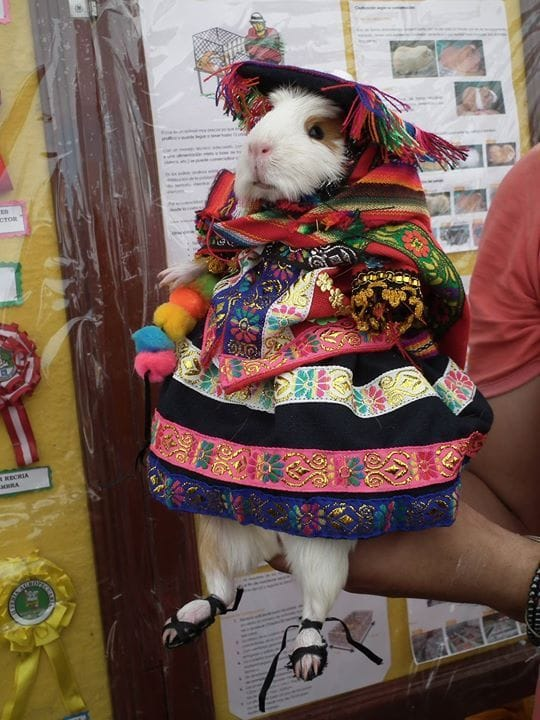

El Perú es un país lleno de historia, tradición y diversidad. Desde las antiguas civilizaciones que dejaron huella en Machu Picchu y Nazca, hasta las costumbres vivas que se celebran en cada fiesta y mercado local, la cultura peruana es un mosaico vibrante de identidad. Sus danzas, su música, sus idiomas y su reconocida gastronomía reflejan la unión de raíces andinas, amazónicas, afroperuanas y europeas, creando una riqueza cultural única en el mundo.
Explorar la cultura peruana es adentrarse en un viaje que combina lo ancestral con lo contemporáneo, donde cada región aporta sus propios colores, sabores y tradiciones.
En esta web podrás encontrar información acerca de lugares turísticos, gastronomía, historia y geografia de este fantástico país, ¡presiona alguno de los botones abajo!
